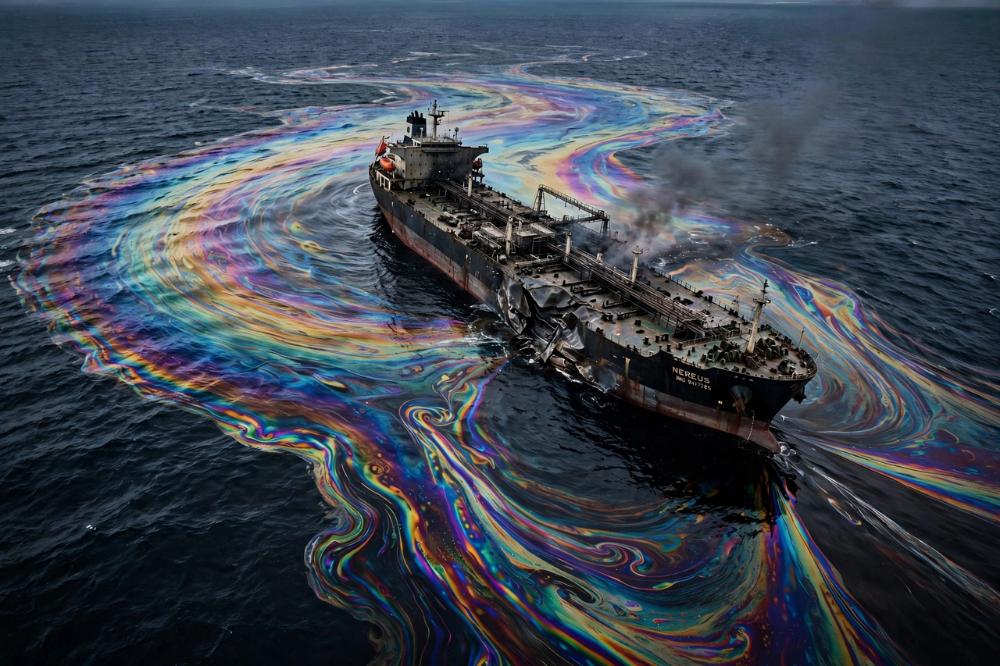

Oil spill

An oil spill is the release of liquid petroleum into the environment, especially the ocean, from tankers, pipelines, offshore platforms, refineries or wells. Spills are among the most visible forms of Water pollution: they coat wildlife and shorelines, poison marine food webs and can take decades to fully clear. See also Environmental disaster.
Volumes have fallen sharply since the 1970s as tanker design and regulation improved, but single accidents can still release tens of millions of gallons.
Major spills
The Deepwater Horizon blowout (Gulf of Mexico, 2010) released on the order of 130 million gallons over 87 days before the well was capped, the largest marine oil spill in US waters. The Exxon Valdez grounding (Alaska, 1989) spilled about 11 million gallons into Prince William Sound and reshaped US law; the Ixtoc I blowout (Mexico, 1979) and tanker disasters such as Torrey Canyon (1967) and Prestige (2002) mark earlier eras of the problem.
On land, pipeline leaks and sabotage — chronically in the Niger Delta — and the deliberate 1991 Gulf War releases in Kuwait are among the largest terrestrial and coastal contaminations.
Response and effects
Responders contain oil with booms, skim it, burn it in place, or spray dispersants to break it into droplets; shorelines are washed, and oiled wildlife cleaned, with mixed success. Effects persist where oil lodges in sediments and marshes: Exxon Valdez oil and its effects were detectable for decades, and Deepwater Horizon harmed dolphins, deep-sea corals and marshes long after the slicks vanished.
Prevention — double hulls (mandated for tankers after Exxon Valdez under the US Oil Pollution Act 1990 and international MARPOL rules), routing, inspection and blowout-preventer standards — has cut large tanker spills from dozens a year in the 1970s to a handful recently.
See also: Water pollution · Environmental disaster · Petroleum · Ocean · Pollution